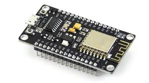
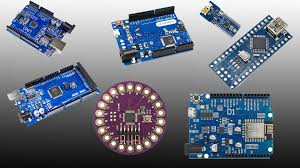

Tanıtımlar
Projelerde kullanabileceğiniz elemannları tanıyalım.
- NODEMCU - NodeMCU, ESP8266 çipini temel alan bir geliştirme kartıdır ve özellikle IoT projelerinde tercih edilir. Dahili Wi-Fi modülü sayesinde internet bağlantısı sağlarken, Arduino ile uyumlu yapısı sayesinde kolay programlanabilir. Küçük boyutu ve düşük güç tüketimi, akıllı ev sistemleri, uzaktan veri izleme ve otomasyon projeleri için ideal hale getirir. Web sunucusu oluşturma, sensör verilerini buluta aktarma ve kablosuz kontrol gibi geniş kullanım alanlarına sahiptir 
- ARDUINO - Arduino kartları, elektronik projelerde yaygın olarak kullanılan mikrodenetleyicilerdir ve her modelin kendine özgü avantajları vardır. Arduino Uno, başlangıç seviyesindeki projeler için ideal olup, kolay programlanabilir yapısıyla dikkat çeker. Arduino Mega, daha fazla giriş/çıkış pini ile büyük ölçekli projeler için uygun bir seçenektir. Arduino Nano, kompakt tasarımıyla küçük projelerde tercih edilirken, ESP8266 ve NodeMCU, dahili Wi-Fi modülleri sayesinde IoT projelerinde veri iletişimi sağlamak için kullanılır. Bu kartların her biri farklı gereksinimlere hitap ederek geniş bir yelpazede kullanılabilir 
- RASPERYPI - Raspberry Pi, kompakt ve güçlü bir tek kart bilgisayardır ve eğitim, otomasyon, IoT ve hatta küçük sunucu projelerinde yaygın olarak kullanılır. Linux tabanlı işletim sistemlerini çalıştırabilmesi sayesinde geniş yazılım desteğine sahiptir. GPIO pinleri sayesinde sensörler, motorlar ve diğer bileşenlerle kolayca etkileşime girerek elektronik projelerde esneklik sunar. Raspberry Pi, düşük güç tüketimiyle akıllı cihazlardan ev otomasyonuna kadar çok çeşitli uygulamalarda kullanılabilir